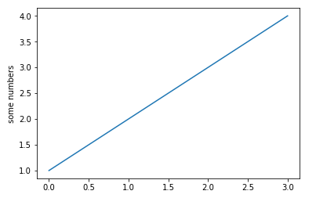
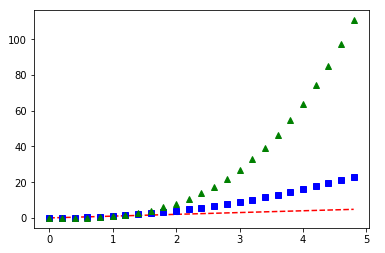

Matplotlib is an excellent 2D and 3D graphics library for generating scientific figures. Some of the many advantages of this library include:
• Easy to get started
• Great control of every element in a figure, including figure size and DPI.
• High-quality output in many formats, including PNG, PDF, SVG, EPS, and PGF.
• GUI for interactively exploring figures and support for headless generation of figure files (useful for batch jobs).
One of the key features of matplotlib is that all aspects of the figure can be controlled programmatically. This is important for reproducibility and convenient when one needs to regenerate the figure with updated data or change its appearance.
User can generate plots, histograms, power spectra, bar charts, errorcharts, scatterplots, etc., with just a few lines of python code.
Example code 1
It will produce:

Example code 2
import numpy as np
# evenly sampled time at 200ms intervals
# red dashes, blue squares and green triangles
plt.plot(t, t, 'r--', t, t**2, 'bs', t, t**3, 'g^')
plt.show()
It will produce:

https://matplotlib.org/gallery/index.html